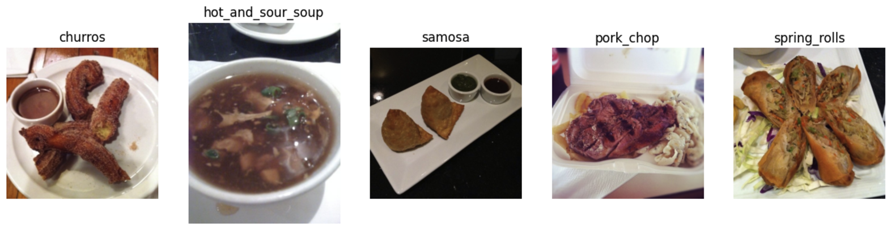
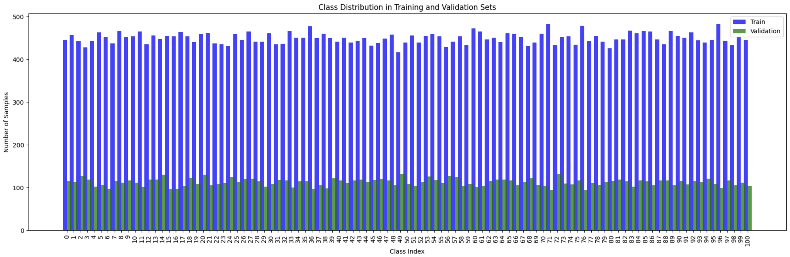
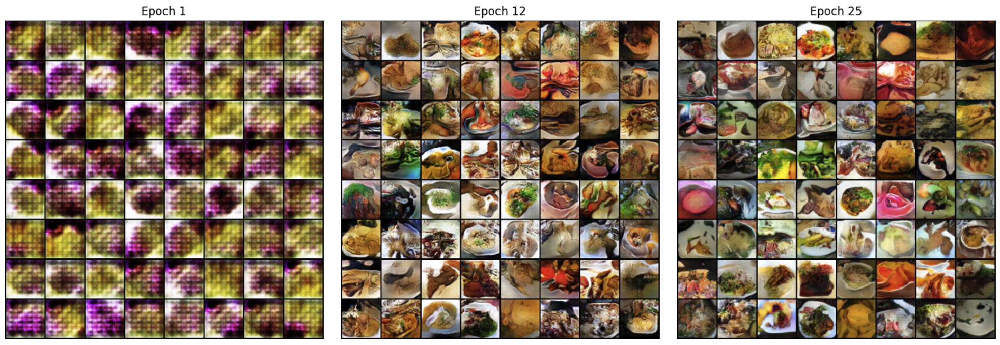

Project Overview
The goal of this project is to classify food images from the Food-101 dataset by experimenting with various deep learning techniques. It explores the use of a custom convolutional neural network (CNN), transfer learning with DenseNet121, and data augmentation using a Conditional GAN (cGAN).
This project evaluates how well each method performs and examines the potential of synthetic data in improving classification accuracy.
Dataset Details
The Food-101 dataset contains 101 classes of food, each with 1,000 images, totaling 101,000 images. The images are divided into:
- Training set: 750 images per class (75% of the dataset).
- Testing set: 250 images per class (25% of the dataset).
These images vary in quality, orientation, and size, reflecting real-world challenges in image classification tasks.
 Model Architectures and Methods
Custom CNN
The custom CNN was built from scratch and served as the baseline for this project. Its architecture consists of:
- Convolutional Layers: Five layers with filters ranging from 64 to 1024 to progressively capture more complex features.
- Pooling Layers: Max-pooling after each convolution reduces the spatial dimensions while retaining important features.
- Batch Normalization: Stabilizes training by normalizing activations.
- Fully Connected Layers: Two dense layers with ReLU activations, and the final layer produces predictions for 101 classes.
The model was trained for 15 epochs using the Adam optimizer and CrossEntropyLoss, achieving:
- Top-1 Accuracy: 31.14%
- Top-5 Accuracy: 59.72%

Pretrained DenseNet121
The DenseNet121 model was fine-tuned on the Food-101 dataset using transfer learning. Pretrained on ImageNet, the model’s convolutional layers were frozen, and the classifier was replaced with a linear layer to predict 101 classes.
- Feature Layers: Retained from ImageNet to leverage pretrained knowledge.
- Classifier: Replaced with a fully connected layer suitable for the Food-101 dataset.
The model was trained for 15 epochs with SGD and CrossEntropyLoss, achieving:
- Top-1 Accuracy: 57.77%
- Top-5 Accuracy: 82.06%
Conditional GAN (cGAN)
A Conditional GAN was implemented to generate synthetic images conditioned on class labels, enriching the training dataset. The architecture includes:
- Generator: Combines noise vectors and class labels to produce realistic images. It uses ConvTranspose2d layers, batch normalization, and ReLU activations.
- Discriminator: Evaluates the authenticity of images by combining input images with class labels. It employs convolutional layers with LeakyReLU activations and outputs a probability score.
The cGAN was trained iteratively, with alternating updates to the generator and discriminator. Below is the progression during training:
Once trained, the cGAN generated realistic food images for all 101 classes, adding diversity to the dataset.
DenseNet with Augmented Dataset
The DenseNet121 model was retrained using a dataset augmented with GAN-generated images and additional transformations such as random rotations and horizontal flips. The goal was to examine the effect of synthetic data on performance.
While the augmented dataset introduced greater diversity, the GAN-generated images did not fully match the complexity of real-world images, leading to a slight drop in performance:
- Top-1 Accuracy: 55.62%
- Top-5 Accuracy: 79.66%
Results Summary
- Custom CNN: Top-1 Accuracy: 31.14%, Top-5 Accuracy: 59.72%
- DenseNet121: Top-1 Accuracy: 57.77%, Top-5 Accuracy: 82.06%
- DenseNet with Augmentation: Top-1 Accuracy: 55.62%, Top-5 Accuracy: 79.66%
Conclusion
The project highlights the strengths of transfer learning with pretrained models and the potential of GANs for data augmentation. While DenseNet121 achieved the best performance, future work can focus on improving GAN-generated images and fine-tuning the pretrained layers.